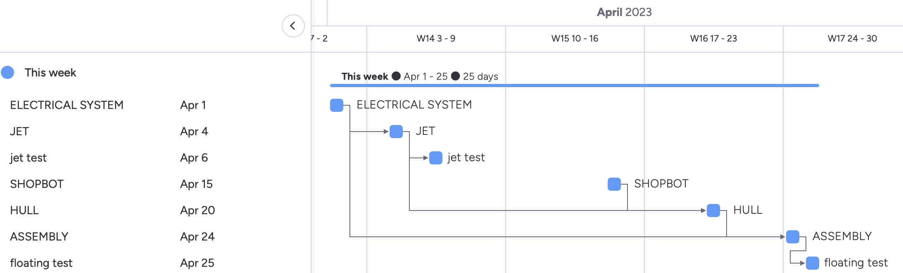

Project management in group projects
Project management is the key to making projects assemble correctly and on time, there are multiple approaches to this feat, the most renowned are the:
- Waterfall model
- Agile manufacturing
- Critical path method
- Kanban
Process
The process is roughly split up into 3 sections, the creation of the jet, hull, and assembly. These sections are better documented in the following pages, where you can read more about each component. But in essence the main objectives were, as can be seen in the gantt chart below the components mentioned before and the test around them.  The documentation and process planning did not start immediately due to uncertainty regarding the schedule of the Shopbot. This led to a break within the process from when the first test of the jet were completed and until the making of the hull could commence. This turns out to be beneficial because the design of the hull was not decided yet. When the mould for the hull was finally cut the schedule became more based on when somebody had time to work, wrather than following a set plan. This resulted in the project being given lower priority than other ongoing projects in other courses and much of the finishing work was left to accumulate later into the month of april. Fortunately this all worked out in the end and the boat sails?